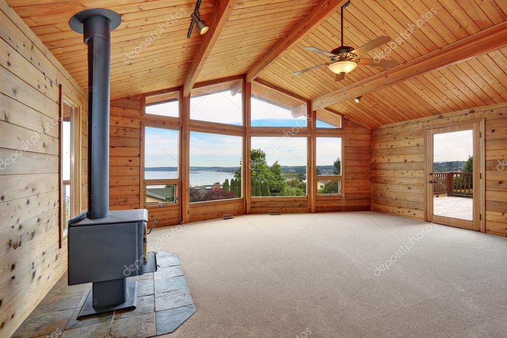

Residential Glass
Glass around the home takes a lot of wear. A cracked pane, cloudy insulated glass, worn screen, loose hardware, or aging shower enclosure can start as a small annoyance and turn into a project you keep putting off.
Ken Caryl Glass helps homeowners repair, replace, upgrade, and customize glass throughout the home.